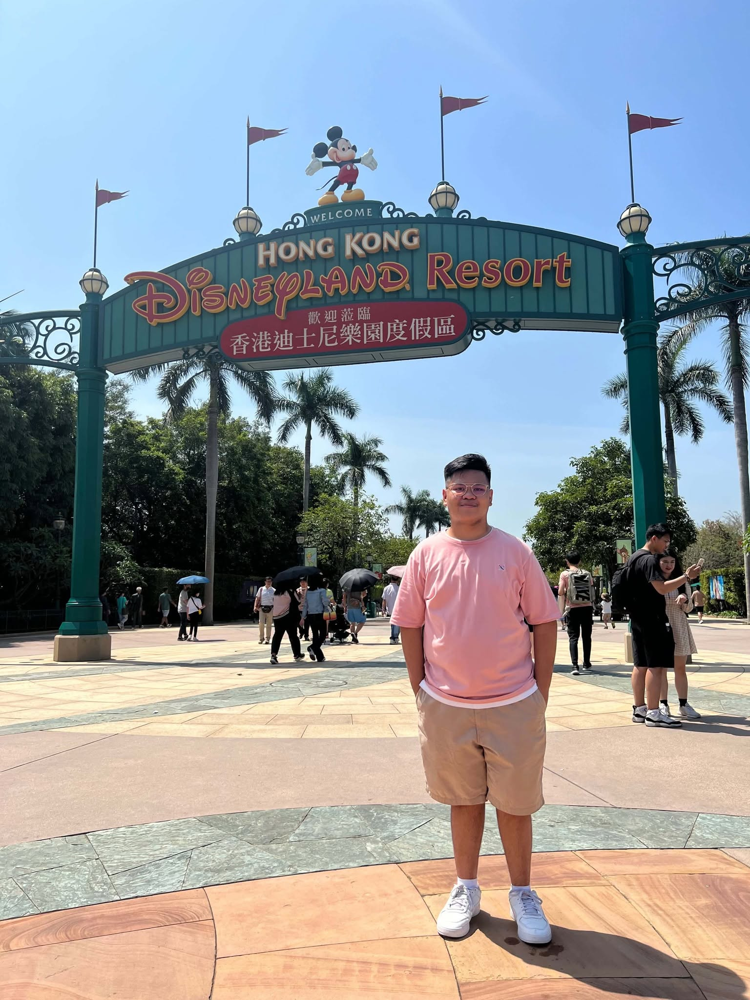
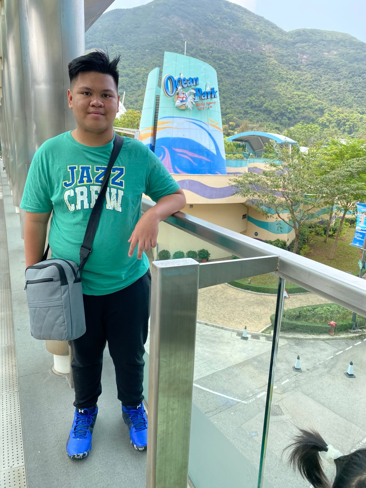
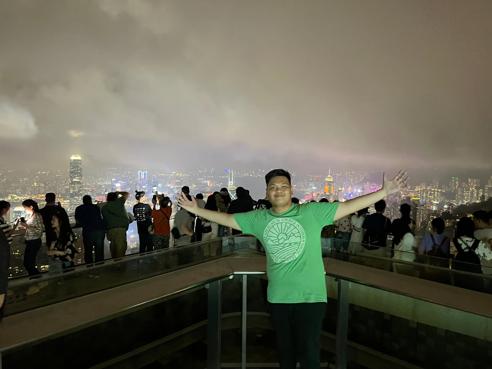

Hong Kong Disneyland (香港迪士尼樂園)
Category: Theme Park
Location: Lantau Island, Hong Kong.
If you ever visit Hong Kong, make sure to add "The Happiest Place on Earth"
Hong Kong Disneyland on your itinerary. It's a theme park that offers a lot of family-friendly activities, rides,
and places to eat. You can also visit the famous "Castle of Magical Dreams", and meet & greet a lot disney characters.
If you're looking for a tourist attraction that offers a family-friendly
activities. Then this place is it. Especially if you are a fan of Disney.

Read more
Ocean Park Hong Kong (香港海洋公園)
Category: Amusement Park
Location: 180 Wong Chuk Hang Road, Aberdeen, Hong Kong Island, Hong Kong
This is not one of those typical ocean parks... as the activities are
not only limited to animal exhibits and marine life. It's also an amusement Park
wherein you can enjoy different fun activities with your family and friends. These activities
are: street performances, rides & attractions, iconic transport and scenic views. Not to mention
that there are a lot of good restaurants and food stalls. I guarantee everyone will enjoy the entire place
because of the numerous activity options.

Read more
Victoria Peak (The Peak)
Category: Tourist Attraction / Viewpoint / Mountain Peak
Location: Victoria Peak, The Peak, Hong Kong Island, Hong Kong
Are you a "city lights" view lover? Then this place is definitely for you.
Victoria Peak also known as "The Peak" is the highest mountain in Hong Kong Island.
It offers a 360-degree panoramic view of the Hong Kong Skyline, Victoria Harbour,
and Kowloon. In the image, we are on top of the peak tower---which is like a mall, and
entertainment complex where people can shop, do activities, and go to the top of the tower to enjoy
the view of the Hong Kong skyline. It's actually cold, at the same time, beautiful. As the city lights
are everywhere. As an individual who is afraid of heights, I still enjoyed this place.
The way to get to the top is by riding The Peak Tram.

Read more